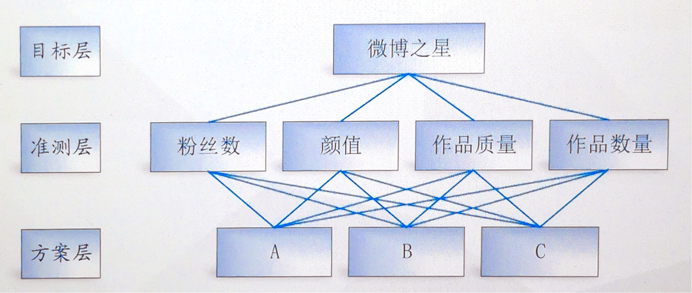
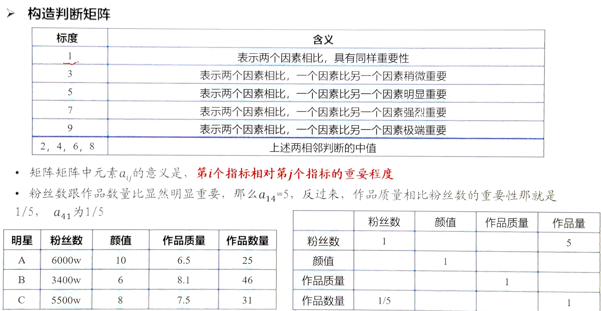
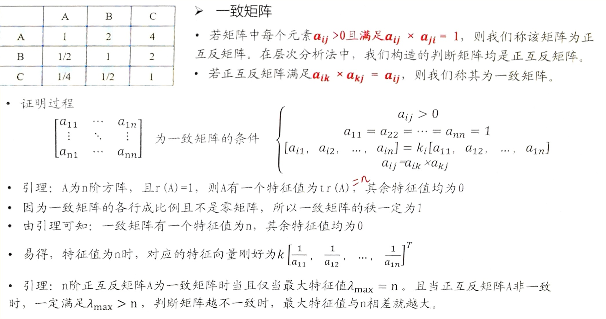

数学建模——层次分析法
模型讲解
层次分析法主要针对评价决策类题目，评价或者选择更好、更优的方案。
过程：
- 找到衡量方案的指标
- 量化指标
- 找到评价体系
- 综合考虑所有的指标
本文章以以下情境为例：
选一个明星参加活动，有三个明星：A、B、C，选择哪位？
| 明星 | 粉丝数 | 颜值 | 作品质量 | 作品数量 |
|---|---|---|---|---|
| A | 6000w | 10 | 6.5 | 25 |
| B | 3400w | 6 | 8.1 | 46 |
| C | 5500w | 8 | 7.5 | 31 |
归一化处理
首先应该使指标在同一数量级且保证在同一指标下其差距不变。
归一化处理其中一个方法：若有三个指标，指标的数组 [a, b, c] 处理后得到 $\left[\frac{a}{a+b+c}, \frac{b}{a+b+c}, \frac{c}{a+b+c}\right]$
其中 $\frac{a}{a+b+c} + \frac{b}{a+b+c} + \frac{c}{a+b+c} = 1$，则每个指标取值范围都在 (0,1) 区间内。
对于上述例子，进行归一化处理后得：
| 明星 | 粉丝数 | 颜值 | 作品质量 | 作品数量 | 评分 |
|---|---|---|---|---|---|
| A | 0.40 | 0.42 | 0.29 | 0.25 | 1.36 |
| B | 0.23 | 0.25 | 0.37 | 0.45 | 1.30 |
| C | 0.37 | 0.33 | 0.34 | 0.30 | 1.35 |
虽然 A 评分最高，但是每个指标的重要性不同，故应给每个指标设定一个权重。
如何科学设定权重？
由于每个人情况不同，有相应不同的比重，这些主观因素会带来不便。
层次分析法
层次分析法 (Analytic Hierarchy Process, AHP) 是对一些较复杂、模糊的问题作决策的简易方法。
它特别适用于难以完全定量分析的问题。
层次分析法并非完全客观的定权方法。
模型原理
应用 AHP 分析决策问题时，首先要把问题条理化、层次化，构造出一个有层次的结构模型。在这个模型下，复杂问题被分解为元素的组成部分。这些元素又按其属性及关系形成若干层次。上一层次的元素作为准则对下一层次有关元素起支配作用。这些层次可以分为三类：
- 最高层：这一层次中只有一个元素，一般它是分析问题的预定目标或理想结果，因此也称为目标层。
- 中间层：这一层次中包含了为实现目标所涉及的中间环节，它可以由若干个层次组成，包括所需考虑的准则、子准则，因此也称为准则层。
- 最底层：这一层次包括了为实现目标可供选择的各种措施、决策方案等，因此也称为措施层或方案层。
依据层次分析法建模：
- 建立递阶层次结构模型
- 构造出各层次中的所有判断矩阵
- 一致性检验
- 求权重后重新评价
1. 建立模型

2. 构造各层次中的所有判断矩阵
对指标的重要性进行两两比较，构造判断矩阵，从而科学求出权重。
矩阵中元素 $a_{ij}$ 的意义是：第 $i$ 个指标相对于第 $j$ 个指标的重要程度。

对上例，依次进行两两比较，用表格的方法得到判断矩阵：
| 粉丝数 | 颜值 | 作品质量 | 作品数量 | |
|---|---|---|---|---|
| 粉丝数 | 1 | 2 | 3 | 5 |
| 颜值 | $\frac{1}{2}$ | 1 | $\frac{1}{2}$ | 2 |
| 作品质量 | $\frac{1}{3}$ | 2 | 1 | $\frac{1}{2}$ |
| 作品数量 | $\frac{1}{5}$ | $\frac{1}{2}$ | 2 | 1 |
但是，因两两比较的过程中忽略了其他因素，导致最后的结果出现矛盾。
例如，
$a_{23} = \frac{1}{2}$，说明 颜值 < 作品质量
$a_{24} = 2$，说明 颜值 < 作品数量
可得 作品质量 > 作品数量
但 $a_{34} = \frac{1}{2}$，说明 作品质量 < 作品数量，与上述结果矛盾。
所以需要进行一致性检验。
3. 一致性检验
$a_{ij} = \frac{i \text{ 的重要程度}}{j \text{ 的重要程度}}$，$a_{ik} = \frac{i \text{ 的重要程度}}{k \text{ 的重要程度}}$，$a_{kj} = \frac{k \text{ 的重要程度}}{j \text{ 的重要程度}}$
易得 $a_{ij} = a_{ik} \times a_{kj}$，且矩阵各行（列）成倍数关系，满足这两条的矩阵是一致矩阵，不会出现矛盾的情况。
